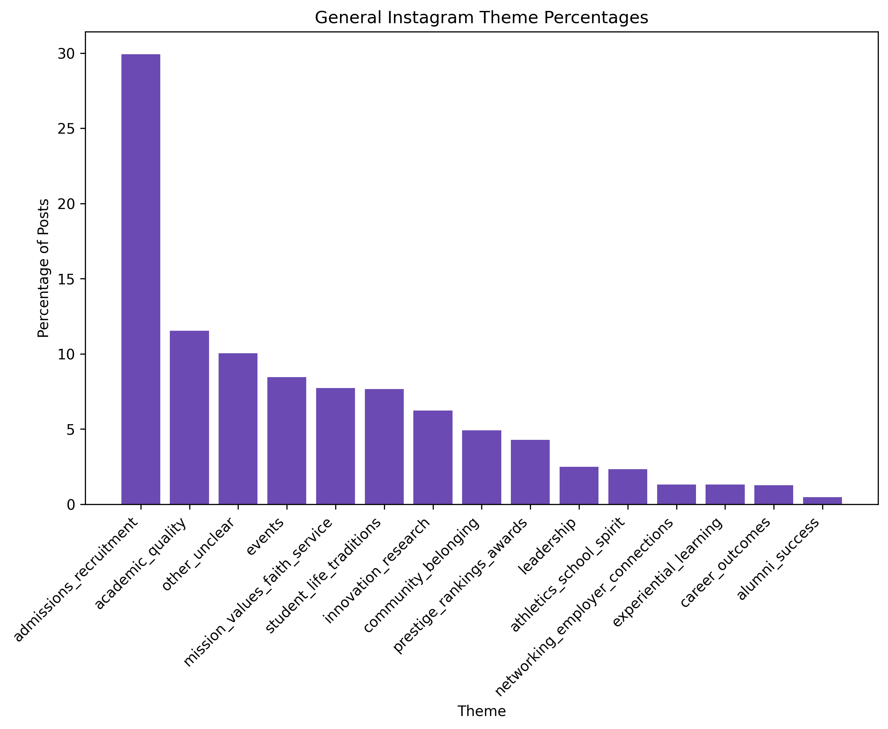
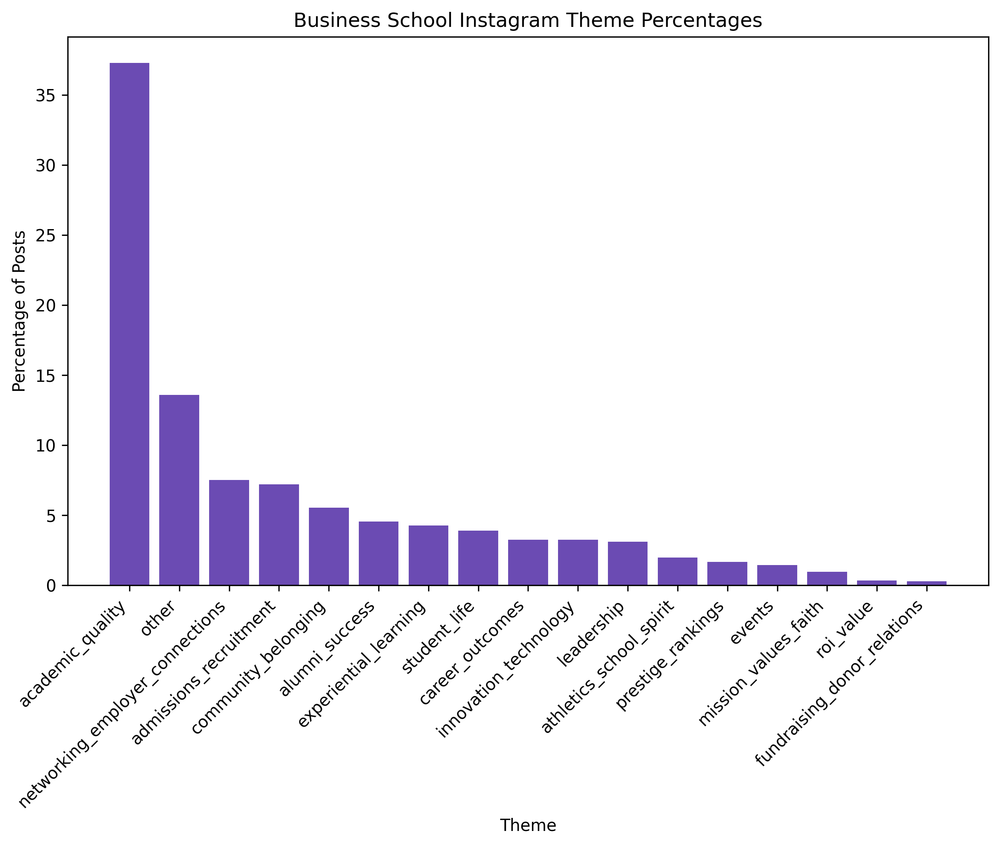

General university accounts often highlight campus life, school spirit, student experience, community, events, and broader school identity.
Business school accounts often focus more on career outcomes, alumni success, admissions, networking, leadership, and experiential learning.
Comparing the two account types helps show how the same platform can support different marketing goals depending on audience and program identity.
This chart shows which themes appeared most often in the general university Instagram data. It helps show how schools use main Instagram accounts to build visibility, identity, community, and emotional connection.

This chart shows which themes appeared most often in the business school Instagram data. It helps show how business schools use Instagram to connect the school brand to programs, careers, alumni, admissions, and professional value.

Comparing the general university Instagram accounts with the business school Instagram accounts helps show that the same platform can serve different branding purposes. General university accounts often focus on school identity, community, and belonging, while business school accounts are more likely to connect the institution to career value, alumni success, admissions, and professional opportunity.